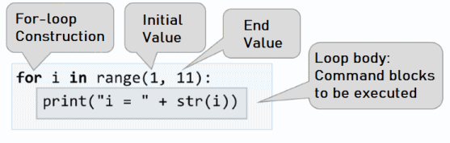

Chapter 5.2 Loops - Exam Problems
In the previous chapter, we learned how to run a command block more than once. That's why we implemented for loop and covered some of its main applications. Our task in the current chapter is to hone our knowledge by solving a couple of more complex problems with loops, which appear in exams. For some of them, we’ll show detailed solved examples, while for others there’ll be tips only. Before we begin, we’ll recall the for loop construction:

for loops consist of:
- Initialization block, where the variable-counter (
i) is declared, and with the help of therange(…)function built into Python, we define what its starting and ending value will be. - Updating the counter – we implement it as a third parameter in the
range(…)function, and it shows with how many steps the variable-counter should be updated. - Loop body - it has a random block full of source code.
Exam Problems
Let’s solve a couple of problems with loops in SoftUni’s exams.
Problem: Histogram
We’re given n-count integers in the range [1 … 1000]. A percent of them, p1, is under 200, p2 percent are between 200 and 399, p3 percent are between 400 and 599, p4 percent are between 600 and 799, and the remaining p5 percent begin at 800. Write a program that calculates and prints the percentages p1, p2, p3, p4, and p5.
Example: we have n = 20 integers: 53, 7, 56, 180, 450, 920, 12, 7, 150, 250, 680, 2, 600, 200, 800, 799, 199, 46, 128, 65. We get the following distribution and visualization:
| Group | Numbers | Number count | Percentage |
|---|---|---|---|
| < 200 | 53, 7, 56, 180, 12, 7, 150, 2, 199, 46, 128, 65 | 12 | p1 = 12 / 20 * 100 = 60.00% |
| 200 … 399 | 250, 200 | 2 | p2 = 2 / 20 * 100 = 10.00% |
| 400 … 599 | 450 | 1 | p3 = 1 / 20 * 100 = 5.00% |
| 600 … 799 | 680, 600, 799 | 3 | p4 = 3 / 20 * 100 = 15.00% |
| ≥ 800 | 920, 800 | 2 | p5 = 2 / 20 * 100 = 10.00% |
Input Data
On the first line of the input is an integer n ( 1 <= n <= 1000 ), which stands for the number of lines with numbers, which will be given to us. On the next n lines, there is one integer in the range [1 … 1000] – the numbers that the histogram will be based on.
Output Data
In the console, print a histogram of 5 lines, each of them containing a number between 0% and 100%, formatted with two-digit precision after the decimal point (for example, 25.00%, 66.67%, 57.14%).
Sample Input and Output
| Input | Output | Input | Output |
|---|---|---|---|
| 3 1 2 999 |
66.67% 0.00% 0.00% 0.00% 33.33% |
4 53 7 56 999 |
75.00% 0.00% 0.00% 0.00% 25.00% |
| Input | Output | Input | Output |
|---|---|---|---|
| 7 800 801 250 199 399 599 799 |
14.29% 28.57% 14.29% 14.29% 28.57% |
9 367 99 200 799 999 333 555 111 9 |
33.33% 33.33% 11.11% 11.11% 11.11% |
| Input | Output |
|---|---|
| 14 53 7 56 180 450 920 12 7 150 250 680 2 600 200 |
57.14% 14.29% 7.14% 14.29% 7.14% |
Hints and Guidelines
The program that solves this problem can be divided theoretically into three parts:
- Reading the input data – in the current problem, this means reading the integer n, followed by a count of n integers, each on a new line.
- Processing The Input Data – in this case, this means dividing the numbers into groups and calculating the division percentage by those groups.
- Outputting the final result – printing the histogram in the console, in the given format.
Processing The Input Data
Before we transition to the real reading of the input, we have to declare our variables, in which the data will be stored:

We declare variables p1_percentage, p2_percentage, etc., in which we’ll store the percentages, as well as cnt_p1, cnt_p2, etc., in which we’ll keep the count of numbers for the respective group.
After we’ve declared the needed variables, we can move on to reading the number n from the console:

Processing The Output Data
To read and assign each number to its respective group, we’ll use a for-loop from 0 to n (the count of the numbers). Each iteration of the cycle will read and assign only one number (current_number) to its respective group. So that we can decide if a selected number belongs to a group, we check its range. If it passes, we increase the count of this group’s numbers (cnt_p1, cnt_p2, etc.) by 1:

After we’ve found out how many numbers there are in each group, we can move on to calculating the percentages, which is also the main part of the problem. We’ll use the following formula:
(Group percentage) = (Group number count) * 100 / (Count of all numbers)
It doesn’t matter whether we’ll divide by 100 (an integer type), or 100.0(a float type) since the division will take place and the result will be saved to the variable. Example: 5 / 2 = 2.5, and 5 / 2.0 = 2.5. In Python 3, there’s no difference whether we’ll be dividing by an integer or a real number - if the result is a real number itself, then it will be saved in the variable as a floating-point number. But in Python 2.7 we have to convert the numbers to a float type, to get the correct result – a real number. Having that in mind, the first variable’s formula will look like this:

To better understand what’s happening, let’s look at the following example:
| Input | Output |
|---|---|
| 3 1 2 999 |
66.67% 0.00% 0.00% 0.00% 33.33% |
In this case, n = 3.
The cycle consists of:
i = 0- we read the number 1, which is lower than 200 and belongs to the first group, thus increasing the counter of the number (cnt_p1) by 1.i = 1– we read the number 2, which, again, belongs to the first group and we increase the group’s counter(cnt_p1) by 1.i = 2– we read the number 999, which belongs to the last group(p5), because it’s bigger than 800, and we increase its group counter (cnt_p5) by 1.
After reading the numbers, we have two of them in the first group, and we have only one in the last group. There are no numbers in the other groups. After we apply the aforementioned formula, we calculate the percentage of each group. It doesn’t matter whether we multiply by 100 or 100.0 – we’ll get the same result: the first group has 66.67%, and the last group – 33.33%. We have to mention that this is valid only for Python 3.
Printing The Final Result
The last step is to print the calculated results. In the problem’s description, it’s said that the percentages have to be with 2-digit precision after the decimal point. To achieve this, we have to write .2f after the placeholder.

Testing in The Judge System
Test your solution here: https://judge.softuni.org/Contests/Practice/Index/1054#0.
Problem: Smart Lily
Lily is N years old. Each birthday she receives a gift. For her odd birthdays (1, 3, 5, …, n) she receives toys, and for each even birthday (2, 4, 6, …, n) she receives money. For her second birthday she receives 10.00 USD, and the sum increases by 10 USD with each following even birthday (2 -> 10, 4 -> 20, 6 -> 30, etc.). Lily has secretly been saving the money for years. Her brother, in the years when she receives money, takes 1.00 USD. Lily sold the toys received with the years, each for P USD, and added the sum to the saved money. With them, she wants to buy a washing machine for X USD. Write a program that calculates how much money she has saved and whether it's enough to buy a washing machine.
Input Data
3 numbers are read from the console, each on a new line:
- Lily's age – integer in the range [1 … 77].
- The price of the washing machine – a number in the range [1.00 … 10 000.00].
- The price of a single toy – integer in the range [0 … 40].
Output Data
Print a single line in the console:
- If Lily's money is enough:
- "Yes! {N}" – where N is the remaining money after the purchase
- If it is not:
- "No! {M}" – where M is the amount of money lacking
- The numbers N and M should be formatted with 2-digit precision after the decimal point.
Sample Input and Output
| Input | Output | Comments |
|---|---|---|
| 10 170.00 6 |
Yes! 5.00 | On the first birthday she receives a toy; Second -> 10 USD; 3rd -> toy; 4th -> 10 + 10 = 20 USD; 5th -> toy; 6th -> 20 + 10 = 30 USD; 7th -> toy; 8th -> 30 + 10 = 40 USD; 9th -> toy; 10th -> 40 + 10 = 50 USD |
| 21 1570.98 3 |
No! 997.98 | She has saved 550 USD. She's sold 11 toys by 3 USD each = 33 USD. Her brother has taken 1 USD for 10 years = 10 USD. There remain 550 + 33 – 10 = 573 USD. |
Hints and Guidelines
Solving this problem, like the previous one, again can be divided into three parts – reading the input data, processing it, and outputting a result.
As we already know, like in most scripting languages, in Python as well, we don't bother defining the types of the variables that we declare. The interpreter decides on its own what it'll be. For Lily's (age) and a single toy's price (present_price) in the problem's description, it's said that they'll be integers. That's why we'll use the built-in function int() to convert the read value from string to integer. When the input() function is used, the input's value in the console is always (string), that's why if a conversion to another type is needed, we can use the built-in functions of Python for this problem. For the washing machine's price, (price_of_washing_machine), we know that it's a fractional number and we choose the float type. In the code below we declare and initialize (assign a value) to the variables:

To solve the problem, we'll need a couple of helper variables – for the toys' count (number_of_toys) for the saved money (saved_money) and the money received on each birthday (money_for_birthday). We initially assign 10 to money_for_birthday, because in the description it's said that the first sum received by Lily is 10 USD:

With a for loop, we go through each of Lily's birthdays. When a loop variable is an even number, it means that Lily has received money and we add them to her savings. At the same time, we subtract 1 USD - the money taken by her brother. After that we increase the value of the variable money_for_birthday, meaning we increase the sum by 10 for the next time she receives money for her birthday. Contrary, when the loop variable is an odd number, we increase the toys' count. Checking whether it's even or odd happens with a division with the remainder (%) by 2 – when the remainder is 0, the number is even, and when the remainder's 1 - it's odd:

We add the money from the sold toys to Lily's savings:

At the end we print the results, taking into account the required formatting, meaning the sum has to be rounded to 2 digits after the decimal point:

In some programming languages there's a construction called conditional operator (?:) (also known as ternary operator), as it's shorter to write. It has the following syntax in Python: operand1 if operand2 else operand3. The second operand is our condition and it has to be of bool type (meaning it has to return true/false). If operand2 returns true, it'll execute operand1, and if it returns false – operand3. In our case, we check whether Lily's saved money is enough to buy a washing machine. If it's higher or equal to its price, the check saved_money >= price_of_washing_machine will return true and it'll print "Yes! …", while if it's lower – the result will be false, and "No! …" will be printed. Of course, instead of the ternary operator, we can use simple if expressions.
More about ternary operators: https://book.pythontips.com/en/latest/ternary_operators.html.
Testing in The Judge System
Test your solution here: https://judge.softuni.org/Contests/Practice/Index/1054#1.
Problem: Back to The Past
John is 18 years old and receives an inheritance of X USD and a time-traveling machine. He decides to travel back to 1800, but he doesn't know whether the money is enough to live without working. Write a program that calculates whether John will have enough money, to live without working until a given year, including the year itself. We accept that each even year (1800, 1802, etc.) he'll spend 12 000 dollars. For each odd year (1801, 1803, etc.) he'll spend 12 000 + 50 * [John's age in the given year].
Input Data
The input is read from the console and contains exactly 2 lines:
- The inherited money – a real number in the range [1.00 … 1 000 000.00].
- The year until he has to live (inclusive) – a real number in the range [1801 … 1900].
Output Data
Print to the console 1 line. The sum has to be formatted with 2-digit precision after the decimal point:
- If the money is enough:
- "Yes! He will live a carefree life and will have {N} dollars left." – where N is the remaining money.
- If the money is NOT enough:
- "He will need {M} dollars to survive." – where M is the amount lacking.
Sample Input and Output
| Input | Output | Explanation |
|---|---|---|
| 50000 1802 |
Yes! He will live a carefree life and will have 13050.00 dollars left. |
1800 → even |
| 100000.15 1808 |
He will need 12399.85 dollars to survive. |
1800 → even |
Hints and Guidelines
The method of solving this problem isn't unlike the previous ones, so we begin by declaring and initializing the needed variables. In the problem's description, it's said that John's age is 18, so we declare the variable years with the initial value of 18. We read other variables from the console:

With the help of a for loop, we loop through all years. We begin at 1800 – the year when John travels back in time, and we end at the year until he has to live. In the loop, we check whether the current year is even or odd. We check it with division with a remainder (%) by 2. If the year is even, from the inheritance (inheritance) we subtract 12000, while if it's odd, from the inheritance (inheritance) we subtract 12000 + 50 * (John's age):

In the end, we print the results, and we do a check whether the inheritance (inheritance) has been enough for him to live without working or not. If the inheritance (inheritance) is a positive number, we print: "Yes! He will live a carefree life and will have {N} dollars left.", while if it's a negative number: "He will need {M} dollars to survive.". We don't forget to format the sum with 2-digit precision after the decimal point.
Hint: Think about using the function abs(…) when printing the output and the inheritance is not enough.
Testing in The Judge System
Test your solution here: https://judge.softuni.org/Contests/Practice/Index/1054#2.
Problem: Hospital
For a given amount of time, patients arrive for a checkup in the hospital every day. She initially has 7 doctors. Each of them can check one patient a day only, but sometimes there's a shortage of doctors, so the other patients are sent to other hospitals. Every third day the hospital calculates whether the count of patients that haven't been examined is higher than those that have been and if so, an additional doctor is assigned. The assignment happens before the start of the day.
Write a program that calculates the count of treated and untreated patients for the given period.
Input Data
The input is read from the console and contains:
- On the first line – the period for which we'll be calculating. Integer in the range [1 … 1000].
- On the following lines (equal to the number of days) – the count of patients that arrive for a checkup on the current day. Integer in the range [0 … 10 000].
Output Data
Print to the console 2 lines:
- On the first line: "Treated patients: {count of treated patients}."
- On the second line: "Untreated patients: {count of untreated patients}."
Sample Input and Output
| Input | Output | Explanation |
|---|---|---|
| 4 7 27 9 1 |
Treated patients: 23. Untreated patients: 21. |
Day 1: 7 treated and 0 untreated patients for the day |
| Input | Output |
|---|---|
| 6 25 25 25 25 25 2 |
Treated patients: 40. Untreated patients: 87. |
| 3 7 7 7 |
Treated patients: 21. Untreated patients: 0. |
Hints and Guidelines
Again, we begin by declaring and initializing the needed variables. The period, for which we have to do our calculations, we read from the console and assign to the variable period. We'll need a couple of additional variables: the count of treated patients (treated_patients), the count of untreated patients (untreated_patients), and the count of doctors (count_of_doctors), which is initially 7:

With the help of the for loop, we go through all days in the given period (period). For each day we read the number of patients from the console (current_patients). The addition of doctors is said in the problem's description to happen every third day, BUT only if the untreated patients' count is higher than the treated's count. That's why we check whether the day is the third one – with the arithmetic operator for division with a remainder (%): day % 3 == 0.
Example:
- If the day is a third one, the remainder of division by 3 will be 0 (
3 % 3 = 0) and the checkday % 3 == 0will returntrue. - If the day is a second one, the remainder of division by 3 will be 2 (
2 % 3 = 2) and the check will returnfalse. - If the day is a fourth one, the remainder of the division will be 1 (
4 % 3 = 1) and the check will again returnfalse.
If the conditional check day % 3 == 0 returns true, there'll also be a check whether the count of untreated patients is higher than the treated's count: untreated_patients > treated_patients. If the result is again true, then the count of doctors (count_of_doctors) will increase.
After that, we check whether the patients' count for the current day (current_patients) is higher than the doctors' count (count_of_doctors). If the patients' count is higher:
- We increase the value of the variable
treated_patientswith the doctors' count (count_of_doctors). - We increase the value of the variable
untreated_patientswith the count of patients left, which we calculate by subtracting the doctors' count from the patients' count (current_patients - count_of_doctors).
If the patients' count is lower, we increase only the variable treated_patients with the current day's count of patients (current_patients):

In the end, we only have to print the count of treated and untreated patients.
Testing in The Judge System
Test your solution here: https://judge.softuni.org/Contests/Practice/Index/1054#3.
Problem: Division
We're given n integers in the range [1 … 1000]. A percentage of them, percent p1, are divided by 2 without remainder, percent p2 are divided by 3 without remainder, percent p3 are divided by 4 without remainder. Write a program that calculates and prints the percentages p1, p2, and p3. Example: we have n = 10 integers: 680, 2, 600, 200, 800, 799, 199, 46, 128, 65. We get the following distribution and visualization:
| Division without remainder by: | Numbers | Count | Percentage |
|---|---|---|---|
| 2 | 680, 2, 600, 200, 800, 46, 128 | 7 | p1 = (7 / 10) * 100 = 70.00% |
| 3 | 600 | 1 | p2 = (1 / 10) * 100 = 10.00% |
| 4 | 680, 600, 200, 800, 128 | 5 | p3 = (5 / 10) * 100 = 50.00% |
Input Data
On the first line of the input stands the integer n (1 ≤ n ≤ 1000) – count of numbers. On the next n lines, each stands a single integer in the range [1 … 1000] – the numbers for which we'll check their divisors.
Output Data
Print to the console 3 lines, each of them containing a percentage between 0% and 100%, with 2-digit precision after the decimal point, for example: 25.00%, 66.67%, 57.14%.
- On the first line – the percentage of numbers divisible by 2.
- On the second line – the percentage of numbers divisible by 3.
- On the third line – the percentage of numbers divisible by 4.
Sample Input and Output
| Input | Output | Input | Output | Input | Output |
|---|---|---|---|---|---|
| 10 680 2 600 200 800 799 199 46 128 65 |
70.00% 10.00% 50.00% |
3 3 6 9 |
33.33% 100.00% 0.00% |
1 12 |
100.00% 100.00% 100.00% |
Hints and Guidelines
For this and the next problem, you'll have to write the program's code on your own, with the help of the following advice.
The program that solves the current problem is similar to the one from the problem Histogram, which we viewed previously. That's why we can begin by declaring our needed variables. For example, a couple of variable names can be n – count of numbers (which we'll read from the console) and divisible_by_2, divisible_by_3, divisible_by_4 – additional variables, storing the count of numbers in their respective groups.
To read and distribute each number in its respective group, we'll have to start ourfor loop from 0 and end at n (the numbers' count). Each of the loop's iterations has to read and distribute a single number. The difference is that a single number can be distributed to more than one group simultaneously, so we have to do three different if checks for each number – whether it's divided by 2, 3, and 4, and to increase the value of the variable that stores the count of numbers in the respective group.
Warning: an if-elif construction won't be of use to us, since when it detects a match, the loop gets broken before checking the following conditions.
In the end, print the found results while keeping the given in the problem's description format.
Testing in The Judge System
Test your solution here: https://judge.softuni.org/Contests/Practice/Index/1054#4.
Problem: Logistics
You're responsible for the logistics of different cargos. Depending on the weight of each load, a different vehicle is needed and costs a different price per ton:
- Up to and including 3 tons – van (200 USD per ton).
- Over 3 and up to 11 tons – truck (175 USD per ton).
- Over 11 tons – train (120 USD per ton).
Your task is to calculate the average price per ton of transported load, as well as what percentage of the overall cargo is transported by each vehicle.
Input Data
A sequence of numbers is read from the console, each on a different line:
- First line: count of loads for transportation – integer in the range [1 … 1000].
- On each following line, the weight in tons of the current load is written – integer in the range [1 … 1000].
Output Data
Print 4 lines to the console, as given:
- Line #1 – the average price per ton of transported cargo (rounded to the second digit after the decimal point).
- Line #2 – the percentage of cargo, transported with a van (between 0.00% and 100.00%, rounded to the second digit after the decimal point).
- Line #3 – the percentage of cargo, transported with a truck (between 0.00% and 100.00%).
- Line #4 – the percentage of cargo, transported with a train (between 0.00% and 100.00%).
Sample Input and Output
| Input | Output | Explanation |
|---|---|---|
| 4 1 5 16 3 |
143.80 16.00% 20.00% 64.00% |
Two of the cargos are transported with a van: 1 + 3, total 4 tons. One cargo is transported with a truck: 5 tons. One cargo is transported with a train: 16 tons. The sum of all cargos is: 1 + 5 + 16 + 3 = 25 tons. The percentage of van-transported cargo: 4/25*100 = 16.00% The percentage of truck-transported cargo: 5/25*100 = 20.00% The percentage of train-transported cargo: 16/25*100 = 64.00% Average price per ton of transported cargo: (4 * 200 + 5 * 175 + 16 * 120) / 25 = 143.80 |
| Input | Output | Input | Output |
|---|---|---|---|
| 5 2 10 20 1 7 |
149.38 7.50% 42.50% 50.00% |
4 53 7 56 999 |
120.35 0.00% 0.63% 99.37% |
Hints and Guidelines
First, we'll read the weight of each load and we'll sum how many tons are being transported by a van, truck, and train respectively, and we'll additionally calculate the total tons of transported cargos. We'll calculate the prices of each transport type according to the total tons and the total price. In the end, we'll calculate and print the total average price per ton and what part of the overall load is transported by each transport type, in percentages.
We declare our variables, for example: count_of_loads – the count of cargos to be transported (we read them from the console), sum_of_tons – the sum of the overall load's weight, microbus_tons, truck_tons, train_tons – variables, holding the sum of the weights transported respectively by a van, truck, and train.
We'll need a for loop from 0 to count_of_loads - 1, to go through all loads. For each load, we read its weight (in tons) from the console and assign it to our variable, for example, tons. To the sum of all loads (sum_of_tons), we add our current load's weight (tons). After we've read our current load's weight, we have to decide which transport vehicle will be used for it (van, truck or train). For this we'll need some if-elif checks:
If the value of the variable
tonsis lower than 3, we increase the value of the variablemicrobus_tonsby the value oftons:microbus_tons += tons;Else, if the value of
tonsis up to 11, we increasetruck_tonsbytons.- If
tonsis higher than 11, we increasetrain_tonsbytons.
Before we print our output, we have to calculate the percentage of tons transported by each vehicle and the average price per ton. For the average price, we'll declare another additional variable total_price, in which we'll sum the total price of all transported loads (with a van, truck, and train). The average price will be calculated by dividing total_price by sum_of_tons. You're left with calculating by yourself the percentage of tons transported by each vehicle and printing the output, adhering to the format as shown in the problem's description.
Testing in The Judge System
Test your solution here: https://judge.softuni.org/Contests/Practice/Index/1054#5.